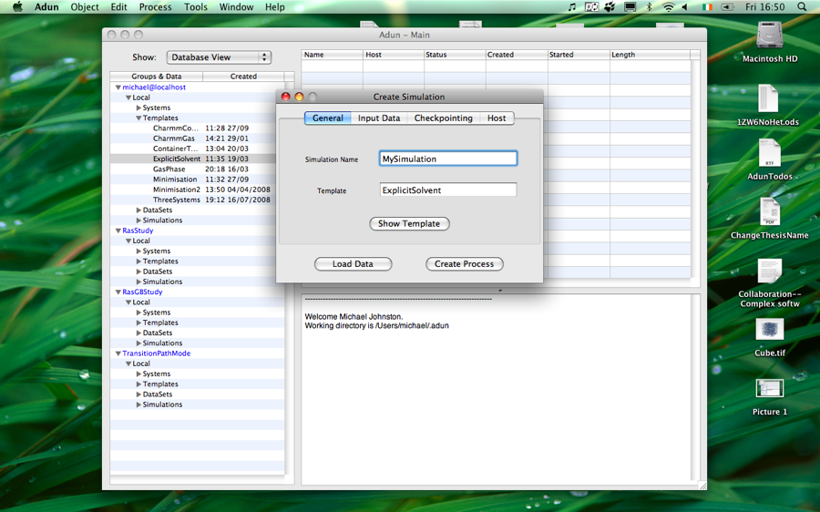

Creating a Simulation
Simulations form the core of what Adun does. This page explains how to create one.

To create a simulation:
- In the main menu go to Object->New->Simulation. This opens the "Create Simulation" window.
- With the General tab shown:
- Give the simulation a name.
- Choose a template for the simulation in the database browser.
- Click 'Load Data' in the "Create Simulation" window. The template will be loaded.
- You can edit some of the template options by clicking 'Show Template'.
- Change to the 'Input Data' tab. For each input slot in the input table:
- Select the system to put in that slot from the database browser.
- Click 'Load Data'. The chosen system will be loaded into the selected slot.
- Change to the 'Checkpointing tab and set the intervals at which you want data to be collected (in terms of simulation steps).
- The 'Host' tab isn't used yet but in the near future you'll be able to choose a remote host to run the simulation on using it.
- Once you're happy with the settings click 'Create Process'. An entry for the simulation will then appear in the Process table.
- For information on starting and interacting with the simulation click the Running A Simulation link below.
See also
Running a Simulation
Simulations
Templates
Simulation Topics